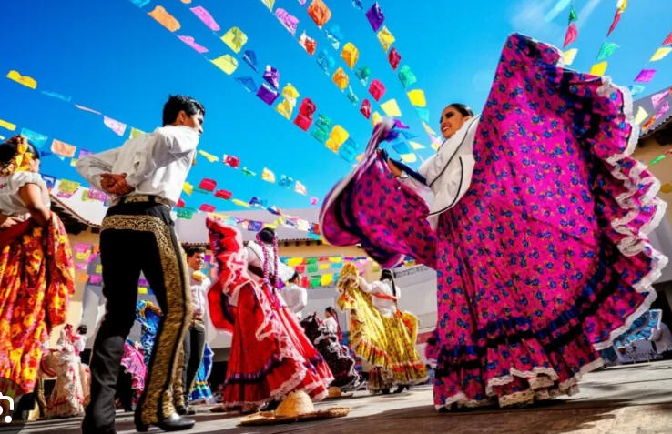
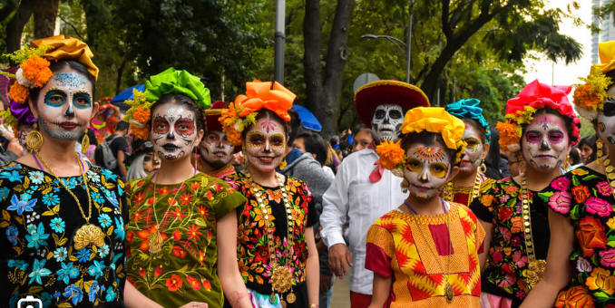

|
|
| Latin-american and Hispanic culture in Mexico |
|
⚫Latin-american and Hispanic culture in Mexico ⚫Mexican Festivals ⚫Mexican Food ⚫Mexican Dance ⚫Mexican Clothing ⚫Tourist spots in Mexico ⚫Contact us for queries ⚫Back to Home page |
The amalgamation of indigenous and Spanish customs has created a diverse
and rich Latin American culture in Mexico that has had a significant
influence on the world, especially the United States.  Although Mexico does not have an official language, Spanish is the most commonly spoken one, and the country recognizes 68 national languages, with 63 being native. Mexican art is renowned, with famous painters such as Frida Kahlo, Diego Rivera, and José Clemente Orozco achieving worldwide recognition. Traditional Mexican clothing, dance, and music, particularly Mariachi music, are crucial components of Mexican identity.  Mexican culture, along with other Latin American cultures, has had a significant impact on the United States, influencing the nation's clothing, music, architecture, literature, language, and food. Additionally, Mexican culture has spread globally, influencing various aspects of everyday life, including music, dance, and entertainment. |